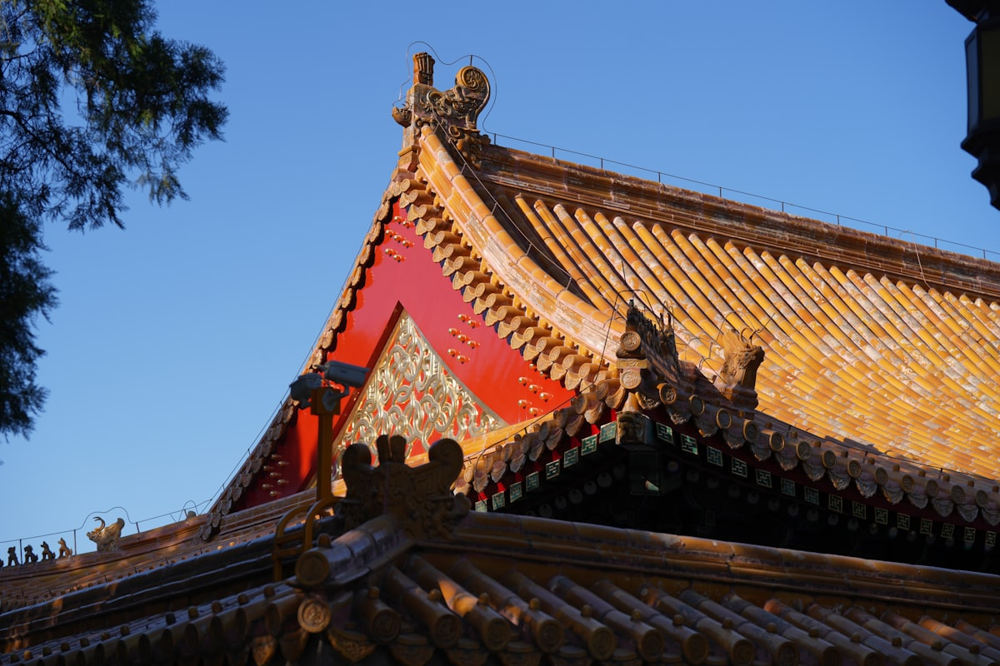
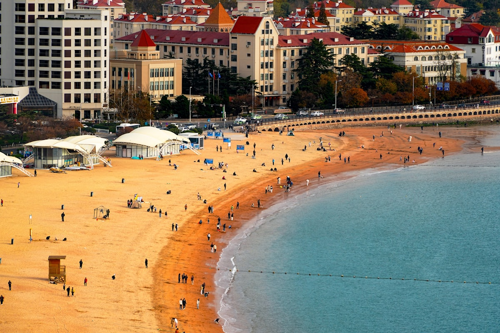
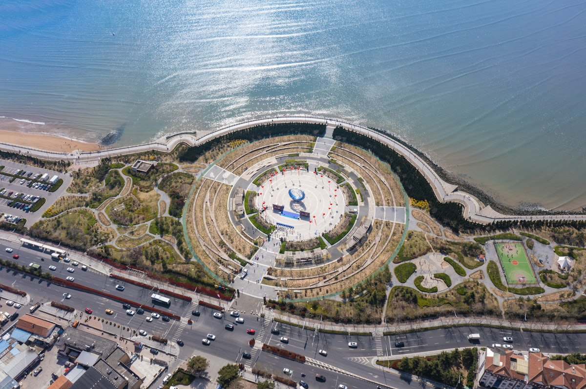
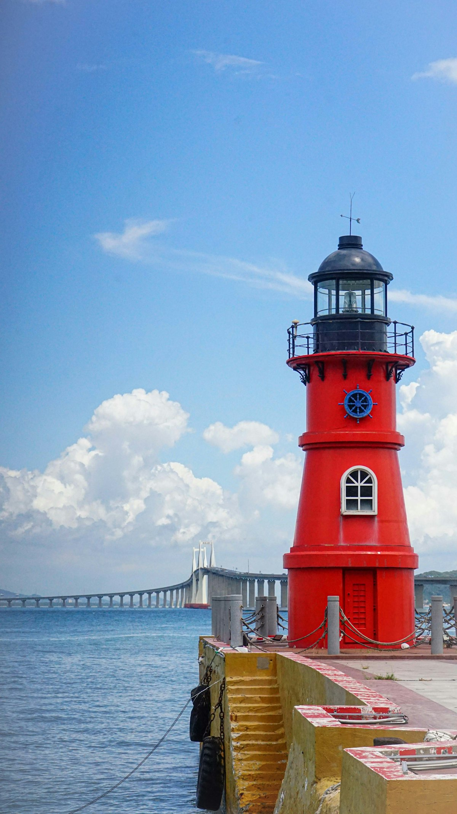
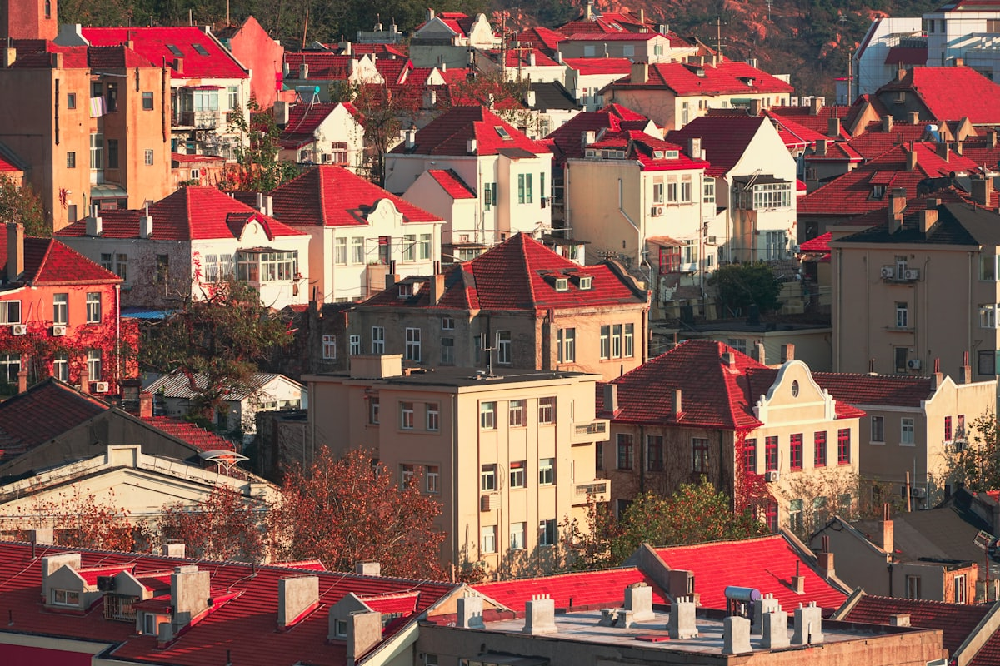

1核心结论
济南
→
泰山
→
曲阜
→
青岛
→
烟台
→
威海
→
返程
🕐 10 天怎么安排最合理
山东是「一山一水一圣人」加黄金海岸的复合目的地：泰山看日出、曲阜拜孔子、青岛烟台威海吹海风、济南看泉水。10 天从鲁中到胶东半岛是一条顺路环线：前 3 天济南—泰山—曲阜文化段，后 6 天青岛—烟台—威海海滨段。高铁串起全程，节奏松弛。
| 事项 | 结论 |
|---|---|
| 事项 | 结论 |
| 推荐方案 | 10 天 9 晚（济南进青岛出，文化+海滨双段） |
| 返程约束 | 第 10 天从威海返青岛/烟台，晚间返程 |
| 行程链 | 济南 → 泰山 → 曲阜 → 青岛 → 烟台 → 威海 → 青岛 |
| 预算（人均） | 经济 4200–5200 ／ 标准 6200–8200 ／ 舒适 9800–13500 |
| 三件提前事 | ① 泰山日出需提前看天气与预约 ② 青岛旺季住宿提前 2 周 ③ 曲阜三孔联票提前购 |
| 季节提醒 | 5–10 月最佳；夏季海滨旺季人多，秋冬海风大但人少价低 |
| 交通卡 | 山东省内高铁直达主要城市，无需办交通卡 |
⚠️ 两个容易忽略的点
① 泰山看日出要夜爬或凌晨上山，需提前预约并看准天气，山顶与山下温差大，棉衣是刚需（可山顶租）。② 胶东半岛青岛、烟台、威海之间看着近，实际沿海线高铁车程 1.5–3 小时，别把三个城市排进同一整天，每天最多转一个城。
2推荐行程 · 10 天版
以下为 10 天 9 晚的推荐节奏。文化段节奏紧凑，海滨段放缓，每天最多一次转场。
| 日期 | 行程 | 过夜地 | 主题 |
|---|---|---|---|
| D1 抵济南 | 抵达济南，傍晚趵突泉夜游 + 泉城广场 | 济南 | 抵达 + 预热 |
| D2 | 济南：趵突泉 → 大明湖 → 芙蓉街 → 下午高铁赴泰安 | 泰安 | 泉城漫步 |
| D3 | 泰山（全天）：红门/天外村上山，南天门、玉皇顶看日落 | 泰安/山上 | 五岳之首 |
| D4 | 曲阜三孔（全天）：孔庙 → 孔府 → 孔林，宿曲阜 | 曲阜 | 儒家圣地 |
| D5 | 高铁赴青岛：栈桥 → 八大关 → 五四广场夜景 | 青岛 | 转场滨海 |
| D6 | 青岛：崂山（巨峰/太清）或 信号山 + 啤酒博物馆 | 青岛 | 山海青岛 |
| D7 | 赴烟台：蓬莱阁 → 长岛/八仙过海（可选），宿蓬莱 | 烟台蓬莱 | 仙境海岸 |
| D8 | 赴威海：刘公岛 → 环海路 → 悦海公园灯塔 | 威海 | 最宜居海岸 |
| D9 | 威海：成山头/神雕山动物园（可选）→ 那香海海边 | 威海 | 半岛东端 |
| D10 返程 | 上午威海海滨，午后返青岛/烟台，晚间返程 | — | 收尾 |
🧭 路线可调原则
泰山日出对天气要求极高，连续阴天时可调整到 D4 前，把曲阜提前。半岛三个城市如果赶时间，烟台威海可合并在 D7–D9 各一天半。带孩子可去蓬莱海洋极地世界、青岛海底世界。海边看心情随时加减。
3逐小时时间线
以下为 10 天全程的逐小时执行时间线，可当作「当天打开照着走」的清单。标注 ※ 的可选项视体力与天气取舍。
D1 · 抵达济南
入住泉城广场附近
🚄 抵达日
| 时间 | 事项 |
|---|---|
| 14:00–17:00 | 抵达济南（高铁到济南站/济南西站，飞机到遥墙机场），地铁进城 |
| 17:30–18:30 | 办理入住（推荐泉城广场/大明湖一带） |
| 19:00–21:00 | 趵突泉夜游（门票 40 元）：灯光下的泉水 + 泉城广场喷泉 |
| 21:00 | 晚餐：把子肉、甜沫，回酒店休息 |
济南号称「泉城」，趵突泉、黑虎泉、五龙潭都值得看，泉城广场是城市中心地标。
D2 · 济南 → 泰安
泉城收尾转场
🏞 转场日
| 时间 | 事项 |
|---|---|
| 08:30–10:30 | 趵突泉（40 元）：天下第一泉，三股泉水喷涌 |
| 10:30–12:00 | 大明湖（免费）：泉城明珠，四面荷花三面柳 |
| 12:00–13:00 | 芙蓉街/宽厚里午餐：油旋、甜沫、把子肉 |
| 13:30–14:30 | 乘高铁赴泰安（约 40 分钟），入住红门/天外村附近 |
| 15:30–17:30 | 泰安老街/岱庙外围漫步，采购登山补给 |
| 18:30 | 晚餐：泰山三美（白菜豆腐水），早点休息准备 D3 |
看日出的攻略通常 D2 晚 22:00–24:00 开始夜爬（约 4–6 小时到玉皇顶）；不看日出可 D3 上午再上山。
D3 · 泰山（全天）
五岳之首
⛰ 泰山日
| 时间 | 事项 |
|---|---|
| 04:30–08:00 | 夜爬或凌晨乘索道/观光车上山，玉皇顶看日出（需提前看天气） |
| 08:30–10:30 | 南天门 + 天街：泰山经典打卡地，瞻鲁台远眺 |
| 10:30–12:30 | 下山逛碧霞祠、孔子庙，泰山石刻文化 |
| 12:30–13:30 | 午餐：山顶简餐或自带干粮 |
| 14:00–16:00 | 中天门/天外村下山（索道或步行），回酒店休息 |
| 17:30 | 晚餐：泰安炒鸡，早休息 |
泰山门票 115 元（含部分观光车），索道单程 100 元。红门—中天门—南天门是经典登山道，全程约 5 小时。
D4 · 曲阜三孔
儒家圣地一日
🏛 儒风日
| 时间 | 事项 |
|---|---|
| 08:30 | 泰安乘高铁赴曲阜东站（约 40 分钟），转车至三孔景区 |
| 09:30–12:00 | 孔庙（三孔联票 140 元）：大成殿、杏坛、十三碑亭，天下第一庙 |
| 12:00–13:00 | 午餐：孔府家宴简版（诗礼银杏、麒麟玉书） |
| 13:30–15:30 | 孔府：孔子嫡系后裔府邸，明故城 |
| 15:30–17:00 | 孔林：孔子及其家族墓地，古木参天 |
| 18:00 | 宿曲阜，晚餐尝曲阜熏豆腐 |
三孔联票含孔庙、孔府、孔林，各点相距约 1.5 公里，可乘马车或步行。晨钟暮鼓的开城仪式值得一看。
D5 · 赴青岛
转场滨海青岛
🌊 转场日
| 时间 | 事项 |
|---|---|
| 08:30 | 曲阜东站乘高铁赴青岛（约 2.5–3h），入住市南/五四广场 |
| 13:00 | 午餐：青岛海鲜（辣炒蛤蜊、鲅鱼水饺） |
| 14:30–16:00 | 栈桥（免费）：青岛地标，海鸥成群 |
| 16:00–18:00 | 八大关（免费）：万国建筑，花石楼、公主楼 |
| 18:30–20:00 | 五四广场夜景：「五月的风」雕塑 + 浮山湾灯光秀 |
青岛是半岛起点，市南区景点密集，栈桥—八大关—五四广场一线步行可串起。
D6 · 青岛
崂山或市区
⛰ 山海日
| 时间 | 事项 |
|---|---|
| 08:00 | 选择 A：乘地铁/大巴赴崂山（南线太清宫或巨峰），约 1h |
| 09:30–15:00 | 崂山太清景区（门票 90–130 元）：太清宫、垭口、仰口，山海一线 |
| 12:00 | 崂山农家宴：石花菜凉粉、崂山绿茶 |
| 15:30–17:30 | 回市区后逛信号山/小鱼山俯瞰老城红瓦绿树 |
| 18:00 | 晚餐：青岛啤酒 + 烤肉，宿青岛 |
不想去崂山可选啤酒博物馆（60 元）+ 台东步行街 + 天主教堂。崂山南线适合看海，巨峰线适合爬山。
D7 · 烟台蓬莱
仙境海岸
🏛 仙岛日
| 时间 | 事项 |
|---|---|
| 08:00 | 青岛乘高铁赴烟台南站（约 1.5–2h），转车赴蓬莱 |
| 10:30–12:00 | 蓬莱阁（联票 100 元）：八仙过海传说，蓬莱水城 |
| 12:00–13:00 | 午餐：蓬莱小面、鲅鱼饺子 |
| 13:30–17:00 | 可选：长岛（船票 + 景点约 200 元）或 三仙山/八仙过海景区 |
| 18:00 | 宿蓬莱/烟台，晚餐海鲜大排档 |
蓬莱阁是中国四大名楼之一，海市蜃楼在春夏之交最可能遇到（看运气）。
D8 · 威海
最宜居城市海岸
🌊 滨海日
| 时间 | 事项 |
|---|---|
| 08:00 | 烟台乘高铁/大巴赴威海（约 1–1.5h） |
| 09:30–12:00 | 刘公岛（门票 + 船票约 130 元）：甲午战争博物馆，海上仙山 |
| 12:00–13:00 | 午餐：威海海鲜（海肠捞饭、温拌海螺） |
| 14:00–16:30 | 环海路骑行：悦海公园灯塔、威海之窗 |
| 17:30 | 宿威海，晚餐鲅鱼水饺 + 威海无花果 |
威海连续多年被评为中国最宜居城市之一，环海路骑行是精华体验，租车约 30 元/小时。
D9 · 半岛东端
成山头与那香海
🗾 东极日
| 时间 | 事项 |
|---|---|
| 08:30 | 包车/大巴赴成山头（约 1.5h） |
| 10:00–12:00 | 成山头（门票 150 元）：中国海岸线最东端，「天尽头」 |
| 12:30–13:30 | 午餐：荣成海鲜 |
| 14:30–17:00 | 那香海（免费）：钻石沙滩、风车海岸，海边漫步 |
| 18:00 | 返威海市区，晚餐 |
成山头号称「中国的好望角」，与韩国隔海相望。神雕山动物园也在附近，带娃可选。
D10 · 返程
告别半岛回家
🚄 返程日
| 时间 | 事项 |
|---|---|
| 08:30–10:30 | 上午威海国际海水浴场/幸福门，采购伴手礼（威海无花果干、海鲜干货） |
| 10:30–11:30 | 乘高铁返回青岛（约 1.5–2h） |
| 12:00–13:30 | 青岛午餐，采购伴手礼（青岛啤酒、崂山绿茶、海鲜干货） |
| 14:00–18:00 | 赴青岛北站/胶东机场，返程 |
伴手礼推荐：青岛啤酒、崂山绿茶、烟台苹果、威海无花果干、周村烧饼、鲁味酱菜。
4景点图鉴
必去（必去）/ 顺路（顺路）/ 可跳过（可跳过）。
必去
泰山 115 元（索道另计）
五岳之首。日出云海、南天门、玉皇顶，帝王封禅圣地。

必去曲阜三孔 联票 140 元
儒家文化圣地。孔庙大成殿、孔府、孔林，世界遗产。
必去
青岛八大关 免费（部分楼另收费）
万国建筑博览。花石楼、公主楼、红瓦绿树，海边漫步。

必去栈桥 免费
青岛百年地标。回澜阁、海鸥、老城天际线。

顺路崂山 90–130 元
海上第一名山。太清宫、巨峰、仰口，山海一线。

顺路蓬莱阁 联票 100 元
八仙过海传说。蓬莱水城、古建群，中国四大名楼。
 顺路
顺路威海刘公岛 门票 + 船票约 130 元
海上仙山 + 甲午纪念地。甲午战争博物馆。

可跳过成山头 150 元
中国海岸最东端。天尽头、好望角，海天一色。
图片为 Unsplash 主题图（青岛海岸、崂山、古建屋顶、山景云海、灯塔均为实景或同主题示意），用于页面配图。更多免费景点：大明湖、五四广场、环海路、那香海。
5路线地图
点击左侧节点可在地图上定位；点击地图 marker 会高亮对应节点。坐标为 WGS-84 转 GCJ-02 纠偏后标注。
6预算明细（三档）
以下为单人、不含购物的估算；门票为旺季参考价，以现场为准。交通按高铁往返计（从华东周边城市出发约 1200–1700 元），不同出发地浮动较大。
| 项目 | 经济（4200–5200） | 标准（6200–8200） | 舒适（9800–13500） |
|---|---|---|---|
| 往返交通 | 高铁约 1200–1600 | 高铁/飞机约 1600–2600 | 飞机 + 接送约 3200–4500 |
| 住宿（9 晚） | 青旅/快捷 950–1350 | 连锁酒店 2100–2900 | 海景/度假酒店 4800–6500 |
| 门票 | 基础景点约 400 | 含索道/船票约 700 | 全含 + 演出约 1200 |
| 餐饮（10 天） | 650–900 | 1300–1700（含海鲜） | 2200–3000（老字号/海鲜宴） |
| 省内交通 | 高铁 + 公交 450–600 | 高铁 + 打车 850–1100 | 包车 1400–1900 |
💰 标准档示例账单（人均约 7000 元）
高铁往返 2000 + 住宿 9 晚 2500（双人分 5000）+ 门票含索道船票 700 + 餐饮 1500 + 省内交通 900 ≈ 7600 元。主要浮动项是半岛段城际交通与海滨住宿，提前订可省 600–1200 元。
7备选方案
7.1 只看精华的 6 天版
- D1 济南（趵突泉+大明湖）
- D2 泰山
- D3 曲阜三孔
- D4 青岛（栈桥+八大关）
- D5 崂山
- D6 返程
7.2 亲子版调整
带娃推荐：青岛海底世界、啤酒博物馆、蓬莱海洋极地世界、威海神雕山野生动物园。泰山可乘索道上下、少爬台阶；三孔用马车代步。
7.3 冬季错峰版
11 月–次年 3 月海滨人少、酒店便宜 30–50%，海风大需厚外套；泰山雪景与冬雾凇很美，但要防滑。曲阜全年适合，冬季游客最少。
8交通与住宿
8.1 山东 ⇄ 各地 交通
| 方式 | 时长 | 参考价 | 备注 |
|---|---|---|---|
| 高铁（推荐） | 视出发地 1.5–9h | 二等座 300–1900 元 | 济南/青岛双枢纽，京沪高铁沿线 |
| 飞机 | 视出发地 1.5–3.5h | 400–2300 元 | 青岛胶东机场、济南遥墙机场 |
| 自驾 | 视出发地 | 高速费 + 油费 | 半岛沿海公路适合自驾 |
⚠️ 省内交通核心提醒
山东高铁密布，济南—泰安约 40 分钟、泰安—曲阜约 40 分钟、青岛—烟台约 1.5–2 小时、烟台—威海约 1 小时。青岛、烟台、威海三个沿海城市之间的城际铁路班次多，提前 1 天购票即可。
8.2 省内交通
- 高铁/城际：济南—泰安—曲阜—青岛—烟台—威海全线通高铁
- 地铁：济南、青岛有地铁，覆盖主要景点
- 打车：市区短途 10–30 元，半岛城市打车方便
- 骑行：青岛环海路、威海环海路骑行体验绝佳
- 包车：成山头等远郊景点建议包车，约 300 元/天
8.3 住宿区域推荐
| 区域 | 价格/晚 | 优点 | 短板 |
|---|---|---|---|
| 济南泉城广场 | 快捷 250–450 / 星级 500–1100 | 近趵突泉、大明湖 | 旺季房源紧俏 |
| 泰安红门/天外村 | 快捷 200–400 | 近泰山登山口 | 看日出需早起 |
| 曲阜三孔附近 | 民宿 200–400 | 近景区、儒风氛围 | 选择比大城市少 |
| 青岛市南/五四广场 | 快捷 300–500 / 海景 600–1400 | 近栈桥、八大关、夜景 | 旺季海景房贵 |
| 威海环翠区 | 快捷 250–450 / 海景 500–1100 | 近环海路、最宜居 | 冬春较冷清 |
9美食清单
🍽 必吃经典
- 青岛啤酒 + 辣炒蛤蜊
- 鲅鱼水饺、海肠捞饭
- 济南把子肉、糖醋鲤鱼
- 泰安三美（白菜豆腐水）
🥮 伴手礼
- 青岛啤酒、崂山绿茶
- 烟台苹果、莱阳梨
- 威海无花果干、海鲜干货
- 周村烧饼、鲁味酱菜
🍢 街头小吃
- 青岛台东夜市（烤鱿鱼、脂渣）
- 济南芙蓉街（油旋、甜沫）
- 烟台焖子、蓬莱小面
- 威海鲅鱼煎饼、无花果
📍 去哪吃
- 青岛：台东、云霄路海鲜街
- 济南：芙蓉街、宽厚里
- 烟台：蓬莱美食街、海边大排档
- 威海：国际海水浴场周边
⚠️ 美食防坑
① 青岛海鲜按斤称，点菜先问清价格与加工费（加工费另收）；② 泰山山顶餐饮贵，自备干粮省钱；③ 烟台焖子和青岛脂渣都是本地人爱吃的小吃，游客店做的不地道；④ 崂山绿茶景区买贵，到茶产区买更划算。
10出行贴士
10.1 行前清单
- 身份证、充电宝
- 舒适步行鞋（泰山/三孔靠走）
- 防晒霜、墨镜（海滨）
- 薄外套/棉衣（泰山看日出）
- 泰山门票与索道提前 1–3 天订
- 泰山看日出提前看天气
- 青岛/威海旺季住宿提前 2 周
- 三孔联票、刘公岛船票提前购
10.2 防踩坑
🧳 四条提醒
① 泰山日出需要碰运气，阴雨天改期或改看日景，别赌；② 海滨城市早晚温差大，夏季也带件薄外套；③ 青岛栈桥海鸥季节（11 月–次年 3 月）人挤人，想拍照早去；④ 三孔景区开城仪式、曲阜六艺城表演有时间表，出行前查好。
🌟 一句话总结
山东是「文化 + 海岸」的双面选手——泰山看日出、曲阜拜孔子、济南赏泉水，然后一路向东奔青岛的啤酒、烟台的仙境、威海的海风，10 天刚好把齐鲁大地的厚度与胶东半岛的辽阔走完。提前订好泰山票与海滨住宿，剩下的就是慢慢逛。